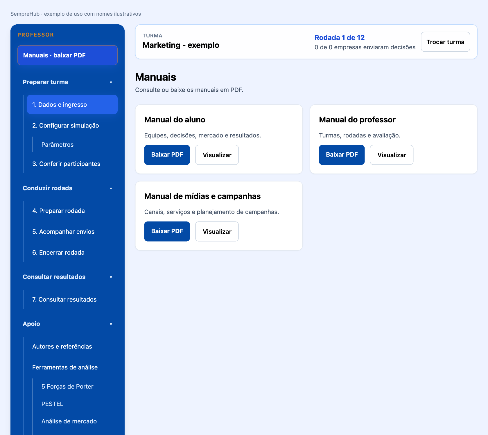
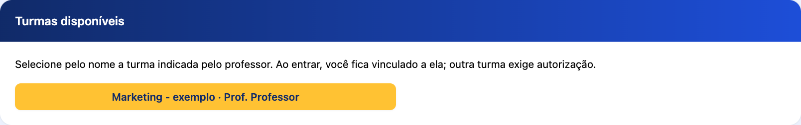
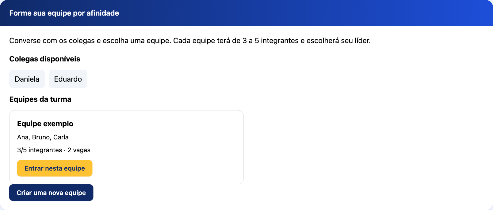
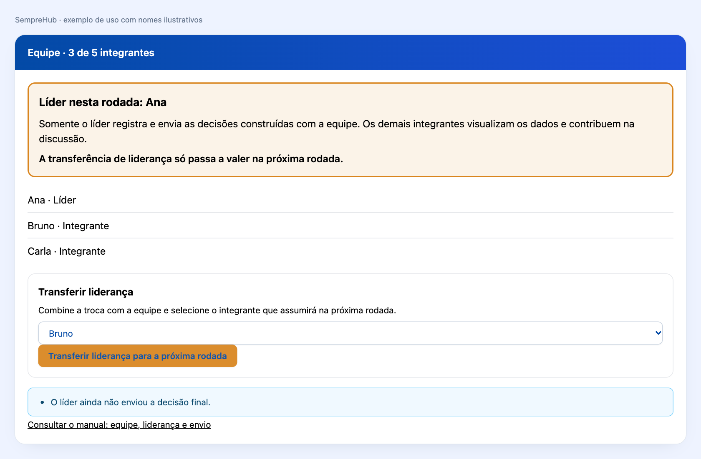
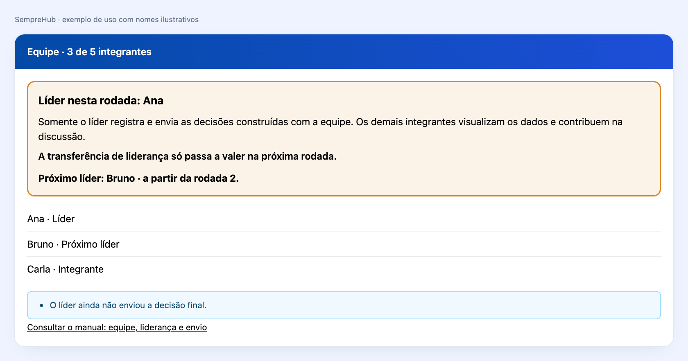
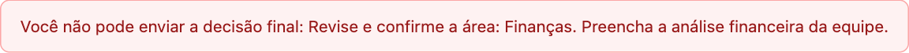
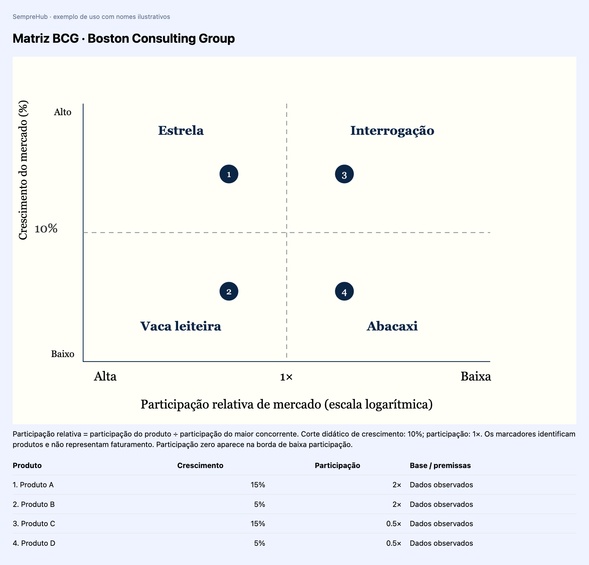

Prezado(a) Futuro(a) Empreendedor(a) e Líder Educacional,
Seja muito bem-vindo(a) ao SempreHub.
Quando idealizei e criei este simulador, o meu objetivo não era construir apenas mais uma plataforma digital de negócios ou um repositório de planilhas contábeis tradicionais. Eu queria criar uma ponte viva entre o conhecimento teórico e a realidade do mercado - um espaço onde você pudesse experimentar a adrenalina, os desafios e as conquistas de liderar uma organização de verdade.
O nome SempreHub carrega a essência da metodologia que preparei para a sua jornada. O 'Sempre' representa a constância, a resiliência e o aprendizado contínuo (Lifelong Learning). O 'Hub' define esta plataforma como um centro conector. Olhando para a nossa logomarca, você verá uma rede de pontos interconectados: eles são os departamentos da sua empresa (Marketing, Produção, Logística, P&D, RH e Finanças). Nenhuma decisão sua será isolada; cada escolha impactará toda a organização.
Aqui, o erro não é um ponto final, mas sim uma variável de aprendizado. Se o seu caixa ficar no vermelho ou se uma estratégia de marketing não der o retorno esperado nesta rodada, não desanime. Analise os relatórios reais, observe o movimento dos seus concorrentes em sala de aula e reajuste a sua operação no mês seguinte.
O mercado do SempreHub está aberto e o futuro do ecossistema está inteiramente em suas mãos.
Prof. Guandalini
Criador e Fundador do SempreHub - Simulador de Empreendedorismo
Autoria e criação: Professor Guandalini. O nome, a marca e a identidade visual do SempreHub foram idealizados e criados pelo Professor Guandalini. A marca aproxima o ambiente corporativo da conexão das redes modernas e representa uma metodologia de aprendizagem integrada, voltada ao Ensino Médio e Superior.
SEMPRE expressa constância, aprendizado contínuo e resiliência. Empreender é um ciclo de tentativas, análise de resultados, ajustes e evolução. HUB identifica um centro conector: estudantes, departamentos, gestão e mercado competitivo se encontram em um mesmo ecossistema.
Os nós periféricos, em azul e ciano, representam os seis departamentos vitais: Pesquisa e Desenvolvimento (P&D), Produção, Logística, Marketing, Recursos Humanos (RH) e Finanças. Eles mostram uma empresa cujas áreas trabalham em conjunto.
As linhas conectoras representam a interdependência das decisões. Alterar o preço no Marketing pode mudar a demanda e o faturamento nas Finanças. Aumentar a Produção modifica a necessidade de materiais, de pessoas e de capacidade logística. Nenhuma decisão é isolada.
Os dois núcleos em Laranja Ouro representam a tomada de decisão do estudante e o motor de Inteligência Artificial que participa do processamento do mercado. A ligação entre eles expressa a resposta do sistema às escolhas das equipes. Na orientação ao aluno, o foco está na análise crítica, na decisão e nas consequências para a empresa.
Azul Royal (#034AA6) e Azul Médio (#0762D9): rigor acadêmico. Associam a identidade ao ambiente corporativo, à credibilidade e à seriedade pedagógica. A intenção visual é comunicar confiança e valorizar a aprendizagem empresarial.
Ciano/Turquesa (#0AADBF): inovação e fluidez. Relaciona a marca à tecnologia e à navegação intuitiva. Aproxima o universo da gestão de estudantes iniciantes e reforça uma experiência leve, organizada e acessível.
Laranja Ouro (#D9851E): núcleo de decisão e geração de valor. Destaca criatividade, iniciativa e competitividade. Na rede, orienta o olhar para os pontos centrais onde as decisões e suas consequências se conectam.
Na logomarca, os gradientes conectam as tonalidades azuis, cianas e douradas. O fundo branco valoriza o contraste da rede e do nome e organiza uma apresentação limpa para os conteúdos do manual.
A escrita sem serifas, com formas modernas e suaves, expressa democratização do conhecimento. O SempreHub foi concebido para estudantes de diferentes áreas, como Saúde, Humanas e Exatas. A organização visual ajuda a localizar decisões e compreender relações entre departamentos.
Ao observar a rede, lembre-se de verificar as consequências de cada escolha nas outras áreas. A marca traduz o propósito pedagógico do simulador: discutir, decidir, acompanhar resultados e aprender com os ajustes. Uma interpretação correta das ferramentas pode apoiar decisões melhores; resultados dependem das escolhas da equipe e do mercado simulado.
No menu lateral, abra Encerrar rodada. Escolha a data em Data limite da rodada e clique em Salvar prazo. O bloqueio ocorre às 23:59:59 de Brasília, exclusivamente na data configurada para aquele mês. Antes desse instante, rascunhos e envios finais continuam permitidos. Sem prazo, o encerramento é manual.
O sistema encerra o mês automaticamente quando o prazo vence, inclusive se ninguém estiver conectado. O professor também pode usar Forçar Fechamento Imediato da Rodada, com confirmação. Rascunhos existentes são preservados e processados como fechamento automático; sem decisão, o motor mantém as escolhas recorrentes anteriores e zera ações pontuais. Esses casos não equivalem a entrega final voluntária da equipe.
O motor preserva os cálculos da simulação, atualiza caixa, estoque e participação e avança o mês uma única vez. No próximo mês, o líder volta a editar e o professor configura um novo prazo. O mecanismo de inteligência de mercado recebe os dados estruturados para preparar análises e relatórios; suas fontes e controles ficam no painel docente. Projeções são identificadas e dados ausentes não são apresentados como fatos confirmados.
O menu lateral é o ponto de partida. Suas categorias e submenus aparecem abertos inicialmente. Você pode recolher uma categoria para organizar a tela e abri-la novamente quando precisar. O submenu selecionado fica destacado, e o conteúdo aparece no painel à direita. Em telas estreitas, o menu permanece disponível acima do conteúdo e possui rolagem própria.
1. Localize no menu o assunto desejado. 2. Clique uma vez no submenu. Não é necessário abrir outra janela para tomar decisões. 3. Confira o título do painel à direita antes de alterar qualquer valor. 4. Ao terminar, salve o rascunho, avance ou envie conforme a etapa. 5. Para estudar, abra Manuais - baixar PDF. Use Visualizar para consultar ou Baixar PDF para guardar uma cópia.

Os campos de decisão mostram pendências, como Falta tomar esta decisão ou Falta confirmar esta decisão. Eles não substituem este manual. A confirmação de uma área significa que a equipe conferiu todos os seus campos, incluindo a decisão de manter em zero ações opcionais. Um aviso de campo vazio continua pendente mesmo depois de marcar a revisão. Os estados do menu referem-se à última versão salva; valores ainda não salvos precisam ser registrados.
Guia para preparar turmas, acompanhar equipes, conduzir rodadas e avaliar a aprendizagem. As imagens de uso apresentam nomes ilustrativos.
1. Entre com sua conta de professor e selecione Criar turma. 2. Defina um nome livre para a turma. Não existe padrão obrigatório: o aluno seleciona exatamente o nome que você cadastrar. 3. Escolha o modo de jogo, cenário, rodadas e parâmetros antes de criar empresas. 4. No painel, abra Dados e ingresso e marque Disponível para ingresso dos alunos. 5. Informe à sala o nome da turma. Não é necessário divulgar código de turma ou convite de equipe.

Você pode ocultar outras turmas ou liberar somente uma. A visibilidade controla novos ingressos; alunos já vinculados continuam acessando sua turma. O vínculo é único: outra matrícula depende de autorização do professor da turma de origem.
A quantidade de alunos não precisa ser informada. Eles se cadastram e entram por conta própria. O professor não cadastra participantes nas equipes como procedimento normal.
Os alunos veem colegas disponíveis e equipes existentes na turma. Escolhem seus grupos por afinidade, com 3 a 5 integrantes. A empresa pode começar com menos integrantes durante a formação, mas precisa atingir o mínimo para escolher o líder e concluir uma rodada.

Depois de perguntar em sala se todos conseguiram entrar nas equipes:
1. Confira a lista Alunos sem equipe no painel de ingresso. 2. Se necessário, organize novas equipes para garantir vagas. 3. Clique em Encerrar formação e distribuir alunos sem equipe. 4. Confira a mensagem com os alunos e suas equipes de destino.
O programa distribui aleatoriamente os alunos já cadastrados naquela turma, usando somente vagas em equipes com pelo menos três integrantes. Nenhuma equipe ultrapassa cinco. Se o total de vagas for insuficiente, a operação é bloqueada sem distribuição parcial.
O encerramento impede novas entradas e criação de equipes. Antes de fechar a primeira rodada, você pode usar Reabrir formação para corrigir a organização. Depois do início das rodadas, essa reabertura não fica disponível.
Em Autorizar troca de turma ou inclusão excepcional, selecione o aluno e registre uma justificativa. A inclusão manual atende impedimentos alheios ao aluno e usa uma equipe com vaga da mesma turma. Alunos que já estão em uma equipe não são duplicados.
Para autorizar troca, escolha uma turma de destino disponível para ingresso. O aluno passa a poder selecionar esse destino; a autorização não o matricula automaticamente. A troca é consumida uma vez e preserva o histórico. Se o aluno for líder de uma equipe ativa, ele precisa transferir a liderança e aguardar a próxima rodada antes de trocar de turma. Sua saída pode deixar a equipe de origem abaixo do mínimo; confira a composição.
A equipe escolhe o líder inicial depois de ter três a cinco integrantes. Cada aluno registra sua escolha. Quem recebe mais da metade das escolhas assume a liderança. Quem criou a empresa não é automaticamente líder nas novas equipes.
O líder registra, salva e envia; os demais visualizam e contribuem na discussão. Não há exigência de confirmação individual de cada integrante. As alterações e o responsável por cada envio ficam registrados.

O líder pode escolher outro integrante e clicar em Transferir liderança para a próxima rodada. A tela destaca o próximo líder e a rodada de vigência. A permissão não muda no mês atual: a transferência é efetivada somente depois do fechamento. Há uma transferência programada por rodada; não existe transferência para depois da última rodada.

Para manter a continuidade, equipes existentes antes desta versão mantêm seu responsável anterior como líder. Os registros de confirmações das versões anteriores também são preservados para consulta histórica.
Em Preparar rodada, defina setor, tipo de comércio e quantidades de notícias, análises e produtos. Revise a edição antes de publicá-la. Os alunos consultam o conteúdo disponível da turma e as condições de concorrência do simulador.
SWOT, Porter, PESTEL e concorrência usam pesquisa atual e informações registradas da empresa. O painel docente permite consultar diagnósticos, datas e fontes de pesquisa. Informações não confirmadas são indicadas como projeções com premissas; não devem ser apresentadas como fatos ocorridos.
A análise de concorrência cobre perfil, localização e alcance, porte e participação, portfólio, qualidade e diferenciais, preços, pagamento, promoções, canais, presença digital, atendimento e reputação. Quando não existe base suficiente para um concorrente real, o sistema pode usar um concorrente de referência explicitamente projetado.
O aluno não recebe decisões prontas. BCG, segmentação e análise financeira são responsabilidade da equipe. Os relatórios narrativos do painel docente não substituem a análise escrita dos alunos; na visão deles, o histórico financeiro reúne suas próprias análises e os demonstrativos calculados.
O aluno percorre produtos e marketing, ferramentas e segmentação, finanças, produção e logística quando aplicável. O líder pode guardar o trabalho em Salvar rascunho ou Salvar e ir para a próxima etapa.
Rascunho não é entrega. O envio final só ocorre quando todas as informações exigidas estiverem presentes. A mensagem de bloqueio indica as pendências.

O programa exige revisão das áreas aplicáveis, mixes completos, diretriz estratégica, segmentação, BCG de todos os produtos e análise financeira. Orçamentos de campanha são exigidos quando o serviço não possui custo público validado. Ações opcionais podem permanecer em zero.
1. Acompanhe Envios e as pendências de cada equipe. 2. Confira se todas as equipes têm entre três e cinco integrantes e líder definido. 3. Confira os envios finais. O fechamento automático ou forçado também processa registros pendentes conforme a regra de calendário. 4. Confirme o fechamento manual quando necessário; os eventos são sorteados pelo sistema. 5. Compare resultados e hipóteses com a turma antes da próxima rodada.
O fechamento calcula o mercado compartilhado, custos, produção e finanças; preserva os registros e avança o mês. Também efetiva as transferências de liderança previstas para a nova rodada. Depois do envio final, o líder não pode editar a decisão até o próximo mês.

A matriz da Boston Consulting Group usa crescimento no eixo vertical e participação relativa no horizontal. Alta participação fica à esquerda: Estrela no alto à esquerda e Vaca leiteira embaixo; Interrogação no alto à direita e Abacaxi embaixo. O corte didático de crescimento é 10%, e o de participação é 1x. O eixo horizontal é logarítmico.
Os alunos informam crescimento, participação, classificação e base dos dados. Projeções exigem premissas. A participação relativa é a participação do produto dividida pela participação do maior concorrente. Marcadores numerados identificam produtos; não indicam faturamento.
Interpretações se traduzem em escolhas de preço, posicionamento, público, produção e investimento. Coerência estruturada entre SWOT, BCG, segmentação e mix pode afetar a conversão comercial. Outros efeitos são econômicos: excesso de estoque imobiliza caixa, crédito gera juros, expansão aumenta capacidade e custos, e P&D afeta qualidade. O sistema não pune textos livres arbitrariamente nem garante lucro por uma classificação correta.
A vida útil contábil padrão de máquinas é 24 meses, configurável antes da entrada das empresas. O aluno consulta o valor vigente na Produção e a condição de cada máquina no painel operacional. Depreciação reduz o valor contábil; a máquina não é removida automaticamente ao fim da depreciação.
Novas compras são opcionais a partir do mês 3, com pagamento no mês da compra e ativação na rodada seguinte. Funcionários, horas extras, insumos e máquinas impõem limites conjuntos à capacidade. Horas extras usam a premissa didática de até 40 horas por funcionário, adicional de 50%, salário/220 e encargos.
A DRE mostra resultado, a DFC mostra dinheiro, e o balanço mostra ativos e obrigações. A análise escrita deve discutir margem, caixa, recebimentos, pagamentos, estoques e capital de giro. Solicitar crédito exibe aviso de custo alto e risco ao lucro e caixa. Em Startup, aporte de investidores não entra como receita comercial e pode diluir os fundadores.
O relatório pedagógico calcula nota de desempenho de 0 a 10 a partir da pontuação ponderada do simulador. Ela é provisória enquanto houver rodadas e final ao encerrar a simulação. Os critérios incluem lucro, patrimônio, satisfação quando disponível e entrega das decisões; critérios sem dados têm pesos redistribuídos.
No novo fluxo de equipes, um envio válido pelo líder comprova a entrega da equipe. Os demais alunos não perdem pontuação por não confirmar individualmente. Acessar o sistema comprova acesso, não aprendizagem ou contribuição efetiva; use a discussão e a justificativa das decisões para sua devolutiva pedagógica.
Consulte resultados, demonstrativos, histórico de liderança, decisões e diagnósticos por empresa e rodada. Exporte os relatórios quando precisar registrar a avaliação. A decisão de incorporar essa nota à avaliação formal da disciplina continua sob responsabilidade do professor.
1. Crie ou acesse sua conta de professor e abra sua turma. 2. Em Dados e ingresso, confira o nome livre da turma e a disponibilidade para ingresso. Informe aos alunos o nome que aparece na tela. Não há necessidade de informar a quantidade de alunos nem distribuir códigos como procedimento normal. 3. Em Configurar simulação, escolha modelo e parâmetros antes de criar empresas. Confira caixa, rodadas, salário, crédito, concorrência e condições do modelo. Registre as premissas didáticas que explicará em sala. 4. Em Conferir participantes, acompanhe inscrições, grupos e líder escolhido. Pergunte se todos conseguiram entrar. Use a distribuição de alunos sem equipe apenas quando existirem vagas em equipes com pelo menos três integrantes. 5. Em Preparar rodada, escolha o setor e prepare o conteúdo. Revise dados, produtos, custos e projeções antes de publicar. Sem edição publicada, o aluno não consegue completar o catálogo correspondente. 6. Em Acompanhar envios, confira as entregas finais. Um rascunho não comprova entrega. Uma equipe sem líder ou abaixo do mínimo precisa de organização antes de fechar a rodada. 7. Em Encerrar rodada, confira pendências, confirme o fechamento e acompanhe os resultados à direita. Essa ação calcula o mês e pode efetivar transferências de liderança. 8. Em Consultar resultados, compare empresas, demonstrativos e avaliação. Em Manuais - baixar PDF, consulte todos os materiais ou indique aos alunos o capítulo adequado.
Apresente a navegação antes de discutir estratégia. Demonstre uma decisão com dados ilustrativos: localizar o submenu, interpretar a informação, escolher um valor, salvar rascunho, confirmar a área e enviar. Explique a diferença entre uma decisão opcional em zero e uma etapa ainda não conferida.
Os avisos junto aos campos indicam pendências, e não dão a solução nem explicam o conceito. A fundamentação fica nos manuais. Oriente o aluno a localizar o assunto no sumário e pedir ajuda quando não compreender o dado. O manual do aluno apresenta exemplos de preço, BCG, crédito, produção e análise financeira.
Um início possível é perguntar: quem é o público; o que será oferecido; por que compraria; quanto a equipe pretende vender; qual capacidade consegue atender; e quanto dinheiro será necessário antes de receber as vendas. Essas perguntas organizam a discussão sem substituir as decisões.
- A edição de mercado está publicada e foi conferida. - As equipes possuem composição válida e líder definido. - Os alunos que ficaram sem equipe foram atendidos sem ultrapassar cinco integrantes. - As decisões estão enviadas, não apenas salvas como rascunho. - As etapas aplicáveis, mixes, BCG, segmentação e análise financeira foram registradas. - A turma conhece as consequências de crédito, produção, pessoas e campanhas. - Transferências de liderança têm vigência clara na próxima rodada.
Se houver bloqueio, identifique a equipe e a pendência e peça a correção. O fechamento forçado ou automático processa rascunhos preservando seus valores, mas identifica esses registros como automáticos. Oriente a entrega final para evitar que escolhas ainda incompletas afetem o negócio. Uma alteração excepcional de participante exige justificativa e registro.
Use a DRE para discutir resultado, a DFC para discutir dinheiro e o balanço para discutir a posição financeira. Receita alta com caixa pressionado pode sinalizar prazos, estoque, custos ou investimento. Compare tendências entre rodadas; um resultado isolado não explica sozinho toda a aprendizagem.
A nota automática de zero a dez resume critérios de desempenho definidos pelo simulador. Confira os critérios e pesos efetivamente exibidos no relatório pedagógico; não atribua uma regra diferente por suposição. A entrega pelo líder conta para a equipe. Histórico de acesso não prova contribuição intelectual.
Exemplo de devolutiva: peça à equipe que explique por que tomou crédito e por que aumentou a produção. Compare justificativa, custo de juros, capacidade e vendas realizadas. Discuta uma alternativa para a rodada seguinte sem preencher a decisão por eles.
Use pesquisa atual, fontes e premissas para revisar os diagnósticos. Um dado confirmado, uma interpretação e uma projeção têm naturezas diferentes. A ausência de fonte não autoriza tratar uma estimativa como fato. A análise financeira e a segmentação continuam responsabilidade dos alunos.
Aluno não vê a turma: confira disponibilidade, rodada de ingresso, encerramento da formação e vínculo anterior. Aluno não edita: confira o líder vigente. Transferência não ocorreu: veja a próxima rodada indicada; agendar não muda a permissão atual. Envio bloqueado: consulte a pendência específica. Sem vagas para distribuição: organize vagas antes de repetir; não force equipes acima do limite.
Se o aluno mudou de turma com autorização, confira a composição da origem. Se a tela mostra versão antiga, peça atualização da página. Se os parâmetros não podem ser alterados, confira a etapa e as empresas já criadas; não prometa mudança retroativa de resultados.
Para retomar uma aula, abra o menu lateral, confira a rodada e use a última versão registrada. Consulte o histórico antes de corrigir uma situação: quem enviou, qual versão, qual rodada e qual justificativa de alteração.